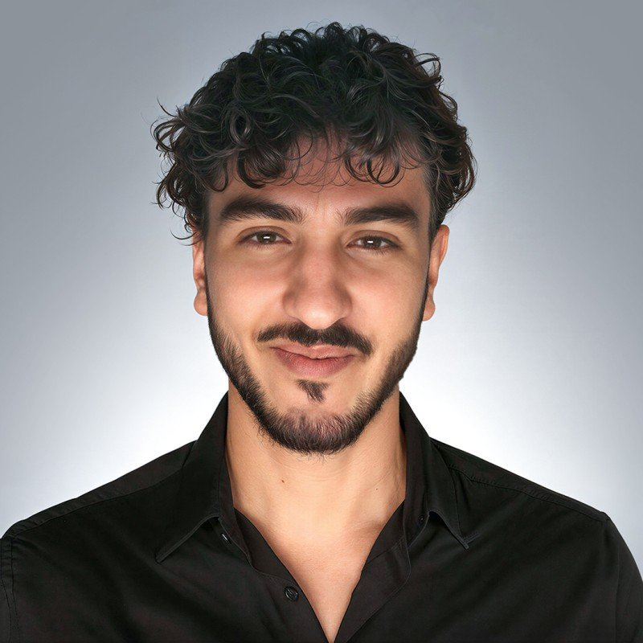

Ingénieur en Génie Industriel avec une expérience en amélioration continue, optimisation des processus, gestion de projet et transformation industrielle. Passionné par le Lean Management, l'analyse de données et la mise en œuvre de solutions innovantes permettant d'améliorer durablement la performance, la qualité et l'efficacité opérationnelle.

Je suis ingénieur en Génie Industriel, actuellement en Mastère Spécialisé Manager de l'Amélioration Continue et de l'Excellence Opérationnelle à CESI, en alternance chez SNCF Réseau. Mon parcours s'appuie sur un socle solide en mécanique : un DUT en Génie Mécanique et Productique, un diplôme d'ingénieur de l'ENSAM Rabat et un échange international à Grenoble INP (École de Génie Industriel).
Ce qui me motive, c'est de comprendre et d'optimiser la façon dont les fonctions d'une organisation industrielle interagissent pour créer de la valeur. De la conception d'un produit à son industrialisation, et de la gestion des opérations à l'amélioration continue, j'évolue sur l'ensemble de la chaîne industrielle et apprécie particulièrement les projets transverses où technique, organisation et performance doivent s'aligner.
Mes expériences au Maroc et en France, dans des environnements multiculturels et techniques, m'ont permis de développer une approche structurée et orientée résultats, fondée sur l'analyse, l'innovation et l'amélioration continue, au service d'une performance durable tout au long du cycle de vie des produits et des opérations.
Optimisation des performances industrielles par l'analyse des processus, la résolution de problèmes et le déploiement des méthodologies Lean Six Sigma afin de réduire les gaspillages et créer de la valeur durable.
Pilotage de projets de transformation, coordination d'équipes pluridisciplinaires et accompagnement du changement pour favoriser l'adhésion, la performance collective et l'amélioration continue.
Interface entre le bureau d'études et la production, avec pour objectif de concevoir des processus robustes, optimiser les performances industrielles et garantir une mise en production efficace des produits.
Conception et développement de solutions mécaniques, maîtrise des outils CAO, dimensionnement des systèmes et prise en compte des contraintes techniques, industrielles et fonctionnelles du produit.
Cliquez sur une expérience pour voir le détail et les documents associés.
Cliquez sur un projet pour voir le détail et les documents associés.
Cliquez sur un diplôme pour voir le détail (cours, logiciels, compétences).
Je recherche un poste d'ingénieur en Excellence Opérationnelle / Amélioration Continue en région parisienne. Amélioration continue, Lean 6 Sigma, industrialisation : parlons-en.
M'envoyer un email